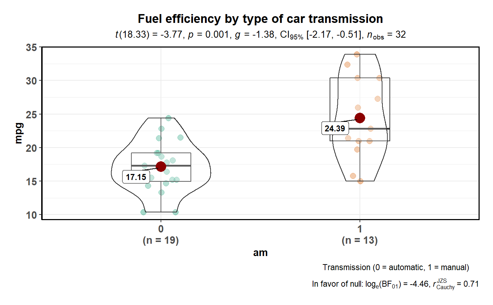
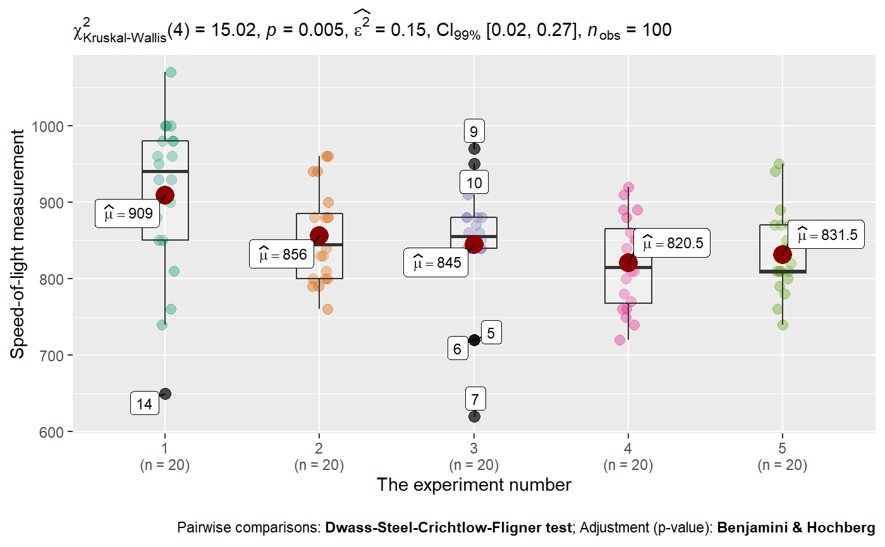

R/ggbetweenstats.R
ggbetweenstats.RdA combination of box and violin plots along with jittered data points for between-subjects designs with statistical details included in the plot as a subtitle.
ggbetweenstats(data, x, y, plot.type = "boxviolin", type = "parametric", effsize.type = "unbiased", effsize.noncentral = FALSE, bf.prior = 0.707, bf.message = FALSE, results.subtitle = TRUE, xlab = NULL, ylab = NULL, caption = NULL, title = NULL, subtitle = NULL, sample.size.label = TRUE, k = 3, var.equal = FALSE, nboot = 100, tr = 0.1, mean.label.size = 3, mean.label.fontface = "bold", mean.label.color = "black", notch = FALSE, notchwidth = 0.5, linetype = "solid", outlier.tagging = FALSE, outlier.label = NULL, outlier.label.color = "black", outlier.color = "black", outlier.coef = 1.5, mean.plotting = TRUE, mean.ci = FALSE, mean.size = 5, mean.color = "darkred", point.jitter.width = NULL, point.jitter.height = 0.1, point.dodge.width = 0.6, ggtheme = ggplot2::theme_bw(), ggstatsplot.layer = TRUE, package = "RColorBrewer", palette = "Dark2", direction = 1, messages = TRUE)
| data | Dataframe from which variables specified are preferentially to be taken. |
|---|---|
| x | The grouping variable. |
| y | The response - a vector of length the number of rows of |
| plot.type | Character describing the type of plot. Currently supported
plots are |
| type | Type of statistic expected ( |
| effsize.type | Type of effect size needed for parametric tests. The
argument can be |
| effsize.noncentral | Logical indicating whether to use non-central
t-distributions for computing the confidence interval for Cohen's d
or Hedge's g (Default: |
| bf.prior | A number between 0.5 and 2 (default |
| bf.message | Logical. Decides whether to display Bayes Factor in favor
of null hypothesis for parametric test (Default: |
| results.subtitle | Decides whether the results of statistical tests are
to be displayed as a subtitle (Default: |
| xlab | Label for |
| ylab | Label for |
| caption | The text for the plot caption. |
| title | The text for the plot title. |
| subtitle | The text for the plot subtitle. Will work only if
|
| sample.size.label | Logical that decides whether sample size information
should be displayed for each level of the grouping variable |
| k | Number of digits after decimal point (should be an integer)
(Default: |
| var.equal | a logical variable indicating whether to treat the
variances in the samples as equal. If |
| nboot | Number of bootstrap samples for computing effect size (Default:
|
| tr | Trim level for the mean when carrying out |
| mean.label.size, mean.label.fontface, mean.label.color | Aesthetics for
the label displaying mean. Defaults: |
| notch | A logical. If |
| notchwidth | For a notched box plot, width of the notch relative to the
body (default |
| linetype | Character strings ( |
| outlier.tagging | Decides whether outliers should be tagged (Default:
|
| outlier.label | Label to put on the outliers that have been tagged. |
| outlier.label.color | Color for the label to to put on the outliers that
have been tagged (Default: |
| outlier.color | Default aesthetics for outliers (Default: |
| outlier.coef | Coefficient for outlier detection using Tukey's method.
With Tukey's method, outliers are below (1st Quartile) or above (3rd
Quartile) |
| mean.plotting | Logical that decides whether mean is to be highlighted
and its value to be displayed (Default: |
| mean.ci | Logical that decides whether 95
is to be displayed (Default: |
| mean.size | Point size for the data point corresponding to mean
(Default: |
| mean.color | Color for the data point corresponding to mean (Default:
|
| point.jitter.width | Numeric specifying the degree of jitter in |
| point.jitter.height | Numeric specifying the degree of jitter in |
| point.dodge.width | Numeric specifying the amount to dodge in the |
| ggtheme | A function, |
| ggstatsplot.layer | Logical that decides whether |
| package | Name of package from which the palette is desired as string or symbol. |
| palette | If a character string (e.g., |
| direction | Either |
| messages | Decides whether messages references, notes, and warnings are
to be displayed (Default: |
For parametric tests, Welch's ANOVA/t-test are used as a default. References:
ANOVA: Delacre, Leys, Mora, & Lakens, PsyArXiv, 2018
t-test: Delacre, Lakens, & Leys, International Review of Social Psychology, 2017
If robust tests are selected, following tests are used is .
ANOVA: one-way ANOVA on trimmed means (see ?WRS2::t1way)
t-test: Yuen's test for trimmed means (see ?WRS2::yuen)
Variant of this function ggwithinstats is currently under work. You can
still use this function just to prepare the plot for exploratory data
analysis, but the statistical details displayed in the subtitle will be
incorrect. You can remove them by adding + ggplot2::labs(subtitle = NULL).
https://cran.r-project.org/package=ggstatsplot/vignettes/ggbetweenstats.html
# to get reproducible results from bootstrapping set.seed(123) # simple function call with the defaults ggstatsplot::ggbetweenstats( data = mtcars, x = am, y = mpg, title = "Fuel efficiency by type of car transmission", caption = "Transmission (0 = automatic, 1 = manual)", bf.message = TRUE )#> Note: Shapiro-Wilk Normality Test for mpg : p-value = 0.123#>#> Note: Bartlett's test for homogeneity of variances for factor am : p-value = 0.072#># more detailed function call ggstatsplot::ggbetweenstats( data = datasets::morley, x = Expt, y = Speed, plot.type = "box", xlab = "The experiment number", ylab = "Speed-of-light measurement", outlier.tagging = TRUE, outlier.label = Run, nboot = 10, ggtheme = ggthemes::theme_few(), ggstatsplot.layer = FALSE )#> Note: 95% CI for partial omega-squared was computed with 10 bootstrap samples.#>#> Note: Shapiro-Wilk Normality Test for Speed : p-value = 0.514#>#> Note: Bartlett's test for homogeneity of variances for factor Expt : p-value = 0.021#>